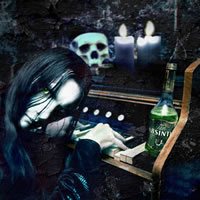

Forums galactiques > Taverne galactique : lieu de discussion informel > Danser jursqu'aubout de la nuit
Pages : 1
| Tyrian Réputation à la taverne : 1334  23/02 ETU 22:10  | Score : 4 Détails Tyrian
Respect diplomatique : 1000 ----- C'est joli, c'est rond, ça sonne bien et ça réjouit ! ------------------------------------------------------ Tyrian, Tyti pour Wensi, avait envie de fêter l'évènement. Il devrait être heureux de l'honneur que lui ont fait de nombreux commandants en appréciant ses discours à l'Assemblée, puisque ce chiffre symbolisait, d'une certaine manière, les applaudissements qui suivaient ses prise de parole. Néanmoins, sa joie était légèrement entachée par des attitudes récentes qu'il comprennait mal. I lse demandait tout particulièrement si le fameux Judayan avait perdu toute notion de subtilité, au point de ne pas saisir celle qui était placée dans son récent discours et qui se résumait par un seul mot : "Aie". Tyrian était déçu de constater que son très malheureux ex concurrent en était arrivé à siffler ses deux derniers discours à l'Assemblée. Judayan avait-il perdu cet esrpit si fin qu'on lui accordait ? Quel dommage...Peut-être n'était-ce qu'un mauvais passage.... Tyrian repoussa ces idées moroses car ce soir devait être une fête. Alors il s'écria à la contonade. _Chers amis, ce soir c'est ma tournée. J'offre à boire à tous ceux qui voudront bien me faire l'amitié de m'accompagner jusqu'à plus soif !!! Puis, La musique se déversa des HP. La fête battait son plein et Tyrian buvait. Il buvait pour faire honneur à ceux qui avaient applaudit à ses discours passés et il buvait pour oublier que Wensi lui manquait tant... Il s'étonna même de ne pas avoir cherché consolation auprès d'Anna... C'est que l'amour vous ramollit son homme alors que le sexe le ...durcit se dit-il en souriant... La belle femme rousse qui ne quittait plus l'époux de l'Impératice du regard crut que ce sourire lui était destiné et l'invita à danser. Tyrian se laissa entrainer dans une valse de Strauss et put faire preuve de ses talents de danseur pinguoin sur la banquise.. C'est que l'alcool avançait aussi vite que la nuit.. Puis, alors que l'ambiance était à son comble, la porte de la taverne s'ouvrit toute grande... | ||
| FLAMUS NIARK Réputation à la taverne : 25  23/02 ETU 22:15 | Score : 2 Détails Juste histoire de t'embêter un peu je te rajoute un plus un sur ta note diplomatique.
Alors c'est encore rond la ? ET Bah non ,niark ! Désoler de cacher ta joie ,mais c'est trop bon niark ! | ||
| Blackwood Réputation à la taverne : 18  23/02 ETU 22:22 | Score : 2 Détails Blackwood était entré. Il vit les portes s'ouvrir, mais ne vit pas la personne qui les avait poussées. Il s'en souciait d'ailleurs peu. Assis nonchalamment sur une chaise, il sirotait un verre d'absinthe de Hill et observait Tyrian en train de danser. Celui-ci semblait quelque peu éméché. Un léger sourire jouait sur les lèvres d'Edward. Il savait ce que ressentait Tyrian.
Edward arrêta soudain de boire son absinthe. Il regardait intensément un commandant présent, un homme vétu très élégamment, à la barbe argentée qui marchait dignement entre les danseurs. Blackwood se tourna vers l'individu louche à coté de lui, un jeune homme aux cheveux courts plaqués en arrière, dont le visage était défiguré par une immonde balafre. Edward lui souffla quelques mots à l'oreille et l'envoya entre les danseurs. Tyrian passant par là, il l'attrapa par le bras: Félicitations, Tyrian. Ce chiffre démontre votre engagement à Origine.En plus, votre oeil est absolument génial, il me fait frisonner devant mon écran | ||
| Cassandra Réputation à la taverne : 316  24/02 ETU 00:52 | Score : 2 Détails Cassandra se baladait dans les ruelles abandonnées à la nuit. Passant devant un Night Club, elle entendit une musique si envoûtante... Cassandra enta comme une furie.
Se défoulant, Se déhanchant, sur la piste de danse, elle s'enivrait de la musique. Elle ne ms pas longtemps à enflammer la piste de danse, captant la lumière des spots et les regards de certains commandant ^^ en autre celui de Tyrian à qui elle leva un pousse pour le félicité de sa performance d’orateur. La piste changea, Cassandra fit une légère pose pour reprendre son souffle. Un charmant jeune homme vient alors danser juste devant elle, la fixant avec forte intensité. Cassandra ne put refuser cette "invitation". Les deux danseurs enchaînaient leurs différents styles de danse. Maintenant les danseurs étaient en osmoses l'un avec l'autre, le tout accordé sur le tempo du son. Leurs corps se rapprochèrent, puis s'écartèrent pour revenir encore plus collés. Etant presque enlacée l'un l'autre, Cassandra profita d’une baisse de volume des HP pour demander à son compagnon son identité, ayant du mal à le reconnaître dans la lueur sombre de la salle. Elle pensa reconnu Tyran mais elle préfera demander : _ Avez-vous un prénom charmant jeune homme ? | ||
| Grabeuh Réputation à la taverne : 1675  24/02 ETU 01:04 | Score : 3 Détails L'autre heureux du jour, le Grabeuhtus milledeRDtus était aussi venu féliciter celui qui, comme lui, venait de passer la barre symbolique des 1000 points.
Il prit un entonnoir, une bouteille étrange (mais la tête de mort et es XXX dessinés dessus signifiaient sans doutes qu'avec BEAUCOUP D'ALCOOL, la fête est encore plus folle) et s'approcha de Tyrian. "Goute moi ça, vieille branche (sans jeux de mots sur ton origine) ça devrais te mettre en joie !" | ||
| Tyrian Réputation à la taverne : 1334 24/02 ETU 10:44 | Score : 2 Détails -- Ah ! ces portes à l’ancienne qui s’ouvrent au moindre courant d’air ! – se dit Tyrian. Je devrais me détendre un peu. Tout est réunit pour une fête joyeuse.
Il tenta de se concentrer sur ceux qui l’entouraient. Ce ne fut pas facile, car sa partenaire menait la danse avec énergie. Il croisa le regard mi sarcastique, mi ironique d’un certain FLAMUS NIARK qu’il ne connaissait que très peu et répondit par un sourire légèrement déformé par la force de rotation imprimée par sa partenaire, décidément très, très dynamique. Plus loin, par dessus l’épaule de la belle rousse, il vit le commandant BlackWood (Tyrian aimait bien tout ce qui touchait le bois de loin ou de près à quelque exception près) se pencher vers un homme au visage balafré, et puis tout alla très vite. Il sentit une main se poser sur son bras qui stoppa net la valse au grand désarroi de l’émérite danseuse et l’homme lui souffla quelques mots le complimentant. Tyrian sourit une fois encore, mais ne put répondre car il était à nouveau entraîné dans un tourbillon. Un pas, deux pas , trois pas et puis on recommence sans fin. Puis deux chose se produisirent simultanément lui causant un choc. Le commandant Grabeuh entra dans son champ de vision et il portait au dessus de sa tête une pancarte dans laquelle était inscrit un chiffre qui clignotait « 1000,1000,1000 ». Tyrian allait s’excuser auprès de sa partenaire pour s’en aller féliciter le courageux commandant qui avait accepté d’organiser des élections, mais c’est à ce moment que le deuxième choc survint. Il venait de reconnaître la danseuse qui se tenait collée contre lui, tout contre lui ! C’était la délicieuse, la fameuse, la fumeuse Cassandra ! Il eut un mouvement de recul en pensant à leur dernière altercation et aux ioniques qui avaient décimé une de ses flottilles, mais elle le retint de ses petits bras et tout en enfonçant ses longs ongles dans ses épaules, elle lui souffla à l’oreille : -- Ce soir c’est ta fête mon grand ! Oublie ta Wensi. Oublie nos petites querelles et regarde comme elle est mignonne ma petite mèche de cheveux sur mon front ! La suite de ses propos se perdit dans le brouhaha général. | ||
| Blackwood Réputation à la taverne : 18 24/02 ETU 15:29 | Score : 1 Détails Blackwood, qui depuis quelque temps tournait autour de la piste, un verre à la main, sans inviter personne, s'arrêta net. Il venai d'apercevoir dans un coin un magnifique piano à queue. Bousculant quelques convives au passage, il flia aussi vite que le lui permit sa jambre boiteuse et s'assit sur le tabouret. Il posa quelques notes avant de commencer à jouer une vieille marche aux accords sombres et tistes. Il ne remarquait pas les personnes qui se massaient autour de lui, il avait fermé les yeux et laissait coruir ses longs doigts blancs et fins sur le clavier. Loirsqu'il eut fini, il se retourna, étonné de voir une demie-douzaine de personnes l'applaudir et en demander une autre. Il eut un sourire en coin avant d'enchainer sur une valse lente. Les couples s'enlacaient dans la lumière maintenant tamisée. Blackwood regardait la piste tout en jouant, ses yeux ayant pris une expression nostalgique et rêveuse...
| ||
| IWOK Réputation à la taverne : 187  24/02 ETU 16:14 | Score : 2 Détails Bien que cela ne serve à rien,je voulais juste dire au commandant Tyrian que c'est moi-même qui ait eu l'honneur de lui accorder son point ultime de respect diplomatique,celui qui lui à permis d'arriver à 1.000.
J'en profite au passage pour féliciter les commandants Tyrian et Grabeuh pour ce franchiseement de la barre des 1.000 points,symbole de leurs investissement dans cette Galaxie. Bien cordialement. IWOK | ||
| Wensicia Corrino Réputation à la taverne : 1642  24/02 ETU 20:28 | Score : 2 Détails Attirée par le bruit, l'Impératrice Padisha porta ses pas vers la Taverne où son chéri fêtait un Respect mérité et fruit d'un long labeur. Accompagnée de deux Sardaukars, elle vint se placer sur le seuil de la Taverne, les mains sur les hanches. Le pied tapotant le sol régulièrement trahissait une impatience falgrante que son sourire médisait. Son Empereur dansait donc avec une brunette ! Louant les Dieux, Wensicia fut heureuse de constater qu'au moins, ce n'était pas une stupide blonde ! Remise en forme par quelques jours de vacances, elle arborait une mine sublime.
Elle attendait juste que son chéri la voit ... | ||
| TC the Unbeliever Réputation à la taverne : 130  24/02 ETU 20:36 | Score : 1 Détails TC the Unbeliever ne s'était plus montré en public depuis bien longtemps...Planitia et ses activités remplissaient ses jours, et ses nuits appartenaient à ses mémoires intemporelles.
Voyant l'impératrice seule, son sang ne fit qu'un tour : "M'accorderez-vous cette danse, Votre Grâce ? en dehors de l'Honneur et du plaisir que celà représente, je ne voudrais pas rater cette occasion de faire blêmir ce cher Tyrian..." | ||
| Tyrian Réputation à la taverne : 1334 24/02 ETU 20:56 | Score : 2 Détails Cette petite sauterie improvisée attirait de plus en plus de monde.
Malgré tout, les notes de l'antique piano à queue avaient quelque chose de nostalgique qui faisait baisser l'ambiance d'un cran. La danse frénetique dans laquelle il avait été entraïné par la superbe rousse s'étant terminée, il s'éloigna à regret de son excitante partenaire. Une choppe remplie d'un fort breuvage dans la main, Tyrian se tenait à l'opposé de la porte à double battants lorsque des sardaukars impériaux entrèrent. Sa vue habituellement perçante était aussi entamée que son esprit du fait de l'alcool. C'est sans doute pour cela qu'il mit un long moment à apercevoir à travers une sorte de brouillard une magnifique créature qui se tenait dans l'embrasure de la porte, mais sur les hanches et avec un sourire que cette fois il reconnut immédiatemment. __Wensi !!! cria-t-il en se dirigeant vers sa bien aimée aussi vite que ses jambes le pouvaient. Hélas, ses jambes ne purent lutter contre la stupidité du tapis qui se souleva à son passage le faisant rouler au sol comme un tonneau imbibé d'alcool ! | ||
| Wensicia Corrino Réputation à la taverne : 1642 24/02 ETU 20:59 | Score : 3 Détails Interloquée par l'impudence de TC, Wensicia vit là une belle occasion de passer quelques temps avec Celui qui ne croyait pas.
Arborant un large sourire, elle tendit les bras, prête à se faire emmener dans une myriade de pas de danse à la gloire du Respect de son Mari. "J'accepte votre proposition, TC, dansons, dansons ... C'est le privilège des Grands de passer du bon temps quand d'autres se cachent de leur colère légitime. Et mon Mari ne semble guère en état de me guider... Je l'embrasseari plus tard !" | ||
| TC the Unbeliever Réputation à la taverne : 130 24/02 ETU 21:05 | Score : 2 Détails TC se saisit délicatement de la main de la Princesse, alors que Tyrian terminait la glissade subséquente à sa chute à deux pas d'eux...
Enjambant délicatement le malheureux Commandant et prenant bien garde que la Princesse ne trébuchât point, TC fit un clin d'oeil complice à Tyrian qui le contemplait d'en bas, et, prenant sa cavalière par la taille, se laissa porter par une divine valse des Temps Immémoriaux. Décidément, la soirée s'annonçait bien ! | ||
| Wensicia Corrino Réputation à la taverne : 1642 24/02 ETU 21:14 | Score : 2 Détails Wensi envoya un baiser de la main à son Mari, combattant encore le tapis de la taverne. Elle plongea ensuite son regard au plus profond de l'âme de Tyrian, au delà de son regard, au delà de ses yeux, portes de ses secrets les mieux cachés. Elle se laissait guider par TC et le rythme tandis qu'un Sardaukars les surveillait de loin, la main sur la dague.
| ||
| Tyrian Réputation à la taverne : 1334 24/02 ETU 22:52 | Score : 2 Détails Tyrian vit des choses bouger au dessus de lui. Ce devait probablement être des jambes de danseurs. Il se souveniat vaguement que sa Wensi était quelque aprt dans le coin, mais était incapable de la situer. Puis, comble de malheur, la choppe lui avait échappé des mains et il avait encore soif.
Il se dirigea sans trop de peine vers le bar et le trouva à sa place. Enfin! Quelque chose qui ne bougeait pas sans cesse ! se dit-il pour lui-même. Puis, alors qu'il allait chopper la choppe remplie à raz-bord de bière avec juste une petite couche de mousse bien blanche, il sentit la douceur d'une main sur son épaule. Il se retourna et tomba face à face avec le charmant sourire de la non moins charmante rousse. Ellait-elle oser l'inviter en présence de son épouse l'impératrice? | ||
| Wensicia Corrino Réputation à la taverne : 1642 25/02 ETU 00:04 | Score : 3 Détails L'esprit embué de Tyrian ne reconnaissait pas la main de sa tendre épouse. Il ne semblait pas non plus la reconnaître tout court : son regard voilé trahissait un fort taux d'alcoolémie. Elle passa sa main sur sa joue, griffant légèrement la joue du Fédéré comme quand ils ... Enfin quand ils étaient ensemble. L'ongle imprimait une légère marque rouge. La princesse Impériale repoussa la rouquine fadasse pour mieux prendre son Mari contre elle. Elle l'embrassa alors avec fougue, sachant pertinemment que l'alcoolique n'y voyait guère. Il fallait qu'il se défoule, le vaillant guerrier ... Elle lui chuchota à l'oreille :
" Je suis de retour mon tendre fédé ... N'est-il pas l'heure de se retrouver ?" | ||
| Tyrian Réputation à la taverne : 1334 25/02 ETU 11:03 | Score : 2 Détails La voix sussurant à son oreille et le coup de griffe sur sa joue apportèrent un peu de clarté dans ses idées.
Il laissa sa main se faire emporter par Wensi et le reste de son corps suivit. Avant d'entrer dans la nuit qui entourait l'auberge de son voile obscur, u npeu comme celui qui était dans sa tête, il jeta un regard en arrière. Malgré tous ces voiles, grâce à son oeil exercé, il aperçut la jolie rousse dans les bras dun autre danseur. Le clin d'oeil qu'elle lui lança et le sourire enjôleur qui l'accompagnait finirent de le convaincre que tout cela ne resterait pas sans suite. Vivement que son respect diplomatique atteigne un nouverau pallier pour une nouvelle fête ! | ||
| Wensicia Corrino Réputation à la taverne : 1642 26/02 ETU 12:52 | Score : 1 Détails Les retrouvailles s'étaient passées si doucement et si sereinement. L'ébriété de Tyrian n'avait fait que donner un nouvel horizon à l'amour du couple impérial. Les deux amants n'avaient pas voulu sortir pendant de nombreuses heures, se consacrant entièrement à l'exploration de leurs sens et de leurs sentiments. Wensi en profita pour parler seule avec celui qui partageait la tête de l'Imperium avec elle.
Une longue discussion amoureuse, politique et sentimentale. Une discussion qui ouvrirait sur de nouvelles voies, de nouveaux sentiments. Quand ils décidaient de retourner sous les draps, Tyrian enclenchait le lecteur de musiques. Wensi aimait le rythme et aimait, par dessus tout, vivre certains événements suivant un rythme ... | ||
| Tyrian Réputation à la taverne : 1334 26/02 ETU 15:08 | Score : 1 Détails Après la danse jusqu'au bout de la nuit, ce fut …… la danse jusqu’au petit matin.
La politique, Tyrian aimait cela, surtout lorsque c'était Wensi qui s'occupait de tout. Ce qu'il aimait avant tout chose, l'ineffable Tyrian, c’était aimer, aimer Wensi. Certes, parfois il se lançait dans des discours antidémocratiques et anti-démocratie, mais c’était avec une conviction en partie feinte….. Histoire d’agacer certains adversaires. La guerre, par contre ; c’et vrai que ça l’excitait un peu, beaucoup, énormément ! Pourtant, Tyrian n’était pas un homme cruel. D’ailleurs, il ne faisait pratiquement jamais exécuter ses prisonniers de guerre. Et lorsqu’il le faisait, c’était sans éprouver la moindre joie ou satisfaction. La plupart du temps il s’agissait de criminels qui avaient sévit dans certains systèmes. Une fois seulement, il avait été contraint d’éliminer quelques soldats du temps jadis où il avait été en conflit avec la fameuse Chiana. Ces valeureux guerriers n’avaient pas eu le temps de se suicider et avaient refusé d’être libérés par crainte du déshonneur ou peut-être par peur de se présenter suite à une défaite face à Chiana. Tyrian n’eut pas le choix. Il les tua de ses propres mains… Les malheureux ne sauraient jamais qu’ils avaient été pratiquement les dernières victimes de cette guerre. Tyrian repoussa ces pensées tristes pour se concentrer sur…ce qu’il avait à faire. C’est que Wensi commençait à le regarder légèrement de travers et c’était pas bon signe pour lui. Le temps s’écoula bien trop rapidement... Wensi fut la première à ouvrir un œil et à sourire aux premiers rayons de soleil qui la taquinaient. Sans pitié, elle secoua le pauvre guerrier qui avait bataillé toute la nuit. --Allez espèce de fainéant ! Une rude journée nous attend ! Tyrian grommela quelques mots, mais Wensi, coquine, lui pinçant les narines d’une main et passant ses doigts sur ses lèvres, parvint à le convaincre qu’il n’avait pas le choix. Il se mit donc sur les coudes et se vengea avec la première idée stupide qui lui passa par la tête. -- Et si tu allais prendre un bain de pétales de roses cueillies par Judayan le jardiner ? Tu sens vraiment beaucoup ma transpiration chérie ! Wensi se mit à rire et s’extrayant des draps exposa toute sa nudité. Tyrian sentit comme une boule lui serrer la gorge. Ce qu’elle était superbe sa Wensi ! Comment une créature aussi divine avait-elle porté son choix sur un guerrier somme toute comme tant d’autres ? Il était vraiment fier d’avoir été l’élu et résolut, à cet instant, de tout faire, au présent et à l’avenir et même au passé si cela était possible, pour ne jamais la décevoir ! | ||
| Wensicia Corrino Réputation à la taverne : 1642 26/02 ETU 15:26 | Score : 1 Détails Le mélange des corps était toujours aussi magique. Sous la douche, Wensi ne put s'empêcher de repenser à ses longues heures où ils étaient ensemble, loin des combats, loin de la politique, loin des affaires diplomatiques. Elle sentait encore le corps de l'Empereur contre le sien, elle sentait encore ses bras l'entourant, elle entendait encore ses encouragements, ses promesses, ses mots doux. De son premier mariage avec le Comte Kenola, elle n'avait gardé qu'un fils qui se rangea aux côtés de Paul Atréides pour mieux épouser sa fille. Un traître qui avait trahi le nom de la Maison Corrino pour embrasser les croyances de Muad'Dib ...
Tyrian était tout le contraire du Comte Kenola : il avait une âme, une vie, une histoire et un avenir. Là où Kenola n'eut droit qu'à une marche glissante dans un très grand escalier très dangereux. Une fois séchée, elle retourna embrasser Tyrian qui s'était rendormi. Il se réveilla très vite ... C'était dans leur intérêt ! |
Pages : 1
Forums galactiques > Taverne galactique : lieu de discussion informel > Danser jursqu'aubout de la nuit